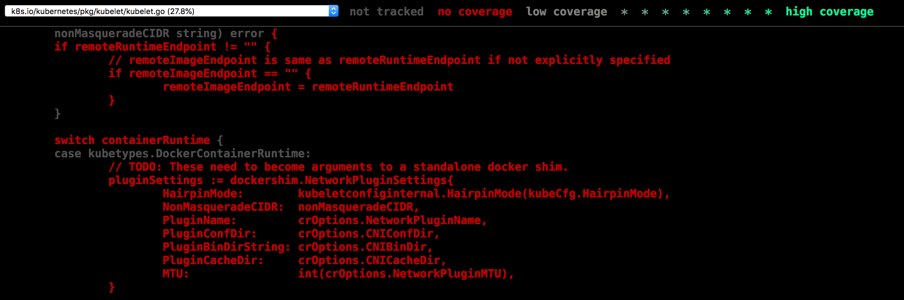
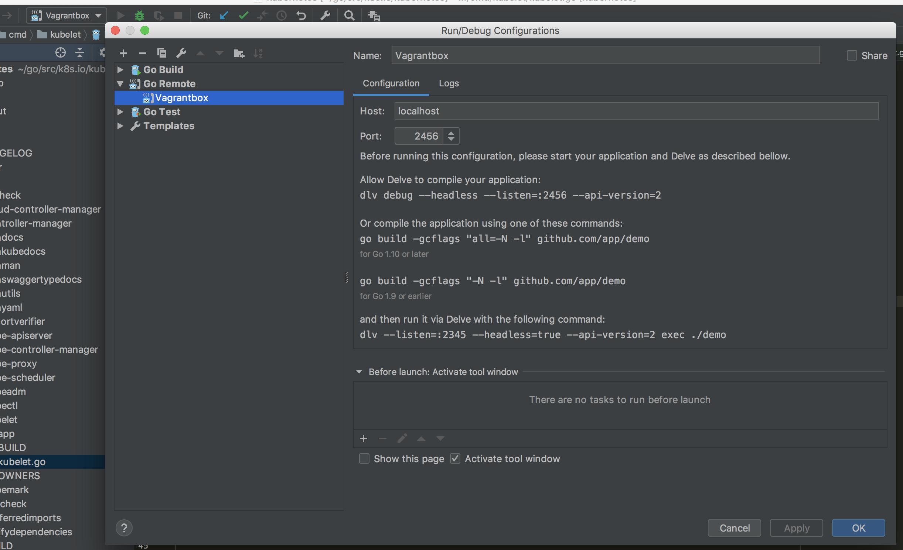
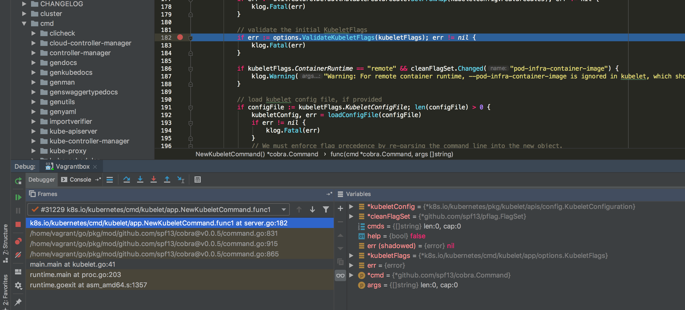

This post reflects some work on setting up a development environment for Kubernetes. We must have Goland, Virtualbox, Delve and MacOS installed. If you're using Linux probably the vm part is not necessary.
Since we are on MacOSX, and Kubelet nodes works only on Linux and Windows the setup of a vm is necessary for this step a Debian Buster image is going to be used, the Virtualbox is 6.1.6 with additions.
Starting with the Vagrantfile we are going to use both forwarded ports and synced folder functionalities.
Vagrant.configure("2") do |config|
config.vm.box = "debian/buster64"
config.vm.network "forwarded_port", guest: 2456, host: 2456
config.vm.synced_folder "/Users/<user>/go/src", "/home/vagrant/go/src/"
endPort 2456 will be used by Delve to make it available outside the host. First is necessary to run the upgrade of linux-headers, to start guest additions for this image.
apt-get upgrade
sudo apt upgrade linux-headers-amd64
sudo apt-get install -y linux-headers-$(uname -r) curlGimme is a good option to move around Go versions, using 1.13.10
curl -sL -o ~/bin/gimme https://raw.githubusercontent.com/travis-ci/gimme/master/gimme; chmod +x ~/bin/gimme
export PATH=${PATH}:/home/vagrant/bin
eval "$(GIMME_GO_VERSION=1.13.10 gimme)"
mkdir -p $GOPATH/src/k8s.io
cd $GOPATH/src/k8s.io
git clone https://github.com/kubernetes/kubernetes
cd kubernetesStarting with Kubelet we should be able to build it
vagrant@buster:~/go/src/k8s.io/kubernetes$ make clean; make WHAT=cmd/kubelet
+++ [0511 22:15:55] Building go targets for linux/amd64:
cmd/kubeletSo far so good, it's even possible to generate some HTML coverage reporting here
vagrant@buster:~/go/src/k8s.io/kubernetes$ make test WHAT=./pkg/kubelet KUBE_COVER=y
+++ [0512 00:28:11] Saving coverage output in '/tmp/k8s_coverage/20200512-002811'
ok k8s.io/kubernetes/pkg/kubelet 9.967s coverage: 52.8% of statements
vagrant@buster:~/go/src/k8s.io/kubernetes$ sudo mv /tmp/k8s_coverage/20200512-002811/combined-coverage.html ~/go/src/
Follows the Kubeadm guide for Debian installation (you need docker installed)
sudo apt-get update && sudo apt-get install -y apt-transport-https curl
curl -s https://packages.cloud.google.com/apt/doc/apt-key.gpg | sudo apt-key add -
cat <<EOF | sudo tee /etc/apt/sources.list.d/kubernetes.list
deb https://apt.kubernetes.io/ kubernetes-xenial main
EOF
sudo apt-get update
sudo apt-get install -y kubelet kubeadm kubectl
sudo apt-mark hold kubelet kubeadm kubectlInitialize the Kubeadm init, untaint the node and install the CNI
kubeadm init --apiserver-advertise-address=10.0.2.15
mkdir -p $HOME/.kube
sudo cp -i /etc/kubernetes/admin.conf $HOME/.kube/config
sudo chown $(id -u):$(id -g) $HOME/.kube/config
vagrant@buster:~/go/src/k8s.io/kubernetes$ kubectl get pods
No resources found in default namespace.https://kubernetes.io/docs/setup/production-environment/tools/kubeadm/install-kubeadm/
As a second options it's possible to use Kind instead of running it directly from Kubeadm, and let Kubelet to join an already existent cluster, after creating a cluster you can fetch all the data to externally access it:
$ kind create cluster
Creating cluster "kind" ...
✓ Ensuring node image (kindest/node:v1.18.2) 🖼
✓ Preparing nodes 📦
...
$ docker exec -it kind-control-plane sh
root@kind-control-plane:/# kubeadm token create
97ihyk.ytx08cps3hbn1c6e
$ openssl x509 -pubkey -in /etc/kubernetes/pki/ca.crt | openssl rsa -pubin -outform 2>/dev/null |openssl dgst -sha256 -hex | cut -d" " -f2
e3b0c44298fc1c149afbf4c8996fb92427ae41e4649b934ca495991b7852b855
$ kubectl -n kube-system get cm kubeadm-config -o json | jq ".data.ClusterStatus"
"apiEndpoints:\n kind-control-plane:\n advertiseAddress: 172.18.0.2\n bindPort: 6443\napiVersion: kubeadm.k8s.io/v1beta2\nkind: ClusterStatus\n"
$ echo "172.18.0.2 kind-control-plane" >> /etc/hostsInstead of initing the Kubeadm directly, you should use join like:
root@buster:/home/vagrant# kubeadm join --token 97ihyk.ytx08cps3hbn1c6e kind-control-plane:6443 --discovery-token-ca-cert-hash sha256:e3b0c44298fc1c149afbf4c8996fb92427ae41e4649b934ca495991b7852b855
W0512 18:00:22.629925 11660 join.go:346] [preflight] WARNING: JoinControlPane.controlPlane settings will be ignored when control-plane flag is not set.
...
[kubelet-start] Downloading configuration for the kubelet from the "kubelet-config-1.18" ConfigMap in the kube-systCheck the external node has connectivity with your cluster.
root@buster:/home/vagrant# kubeadm join --token 97ihyk.ytx08cps3hbn1c6e kind-control-plane:6443 --discovery-token-ca-cert-hash sha256:e3b0c44298fc1c149afbf4c8996fb92427ae41e4649b934ca495991b7852b855
root@buster:/home/vagrant# kubectl get nodes
NAME STATUS ROLES AGE VERSION
buster Ready <none> 80s v1.18.2
kind-control-plane Ready master 20m v1.18.2The kubelet should be running via systemd you can follow with journalctl -flu kubelet. Copy the flags used to setup it, this is going to be used later.
/usr/bin/kubelet --bootstrap-kubeconfig=/etc/kubernetes/bootstrap-kubelet.conf \
--kubeconfig=/etc/kubernetes/kubelet.conf --config=/var/lib/kubelet/config.yaml \
--cgroup-driver=cgroupfs --network-plugin=cni --pod-infra-container-image=k8s.gcr.io/pause:3.2We should stop it with systemctl stop kubelet.
Get delve and rerun the Kubelet recompiling with delve debug.
vagrant@buster:~/go/src/k8s.io/kubernetes$ go get github.com/go-delve/delve/cmd/dlv
vagrant@buster:~/go/src/k8s.io/kubernetes$ dlv debug ./cmd/kubelet --headless --listen=:2456 --api-version=2Finally you should be able to connect in the listening port.
Configure Goland to debug the host:

It's possible now to debug the code normally, just use the project from the mounted folder with the actual source code.

@maulion on TGIK 109